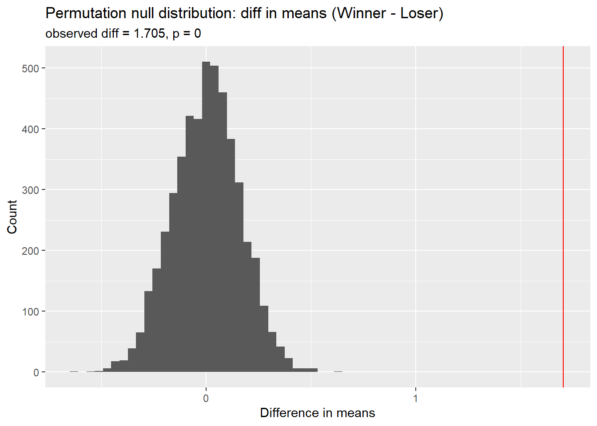
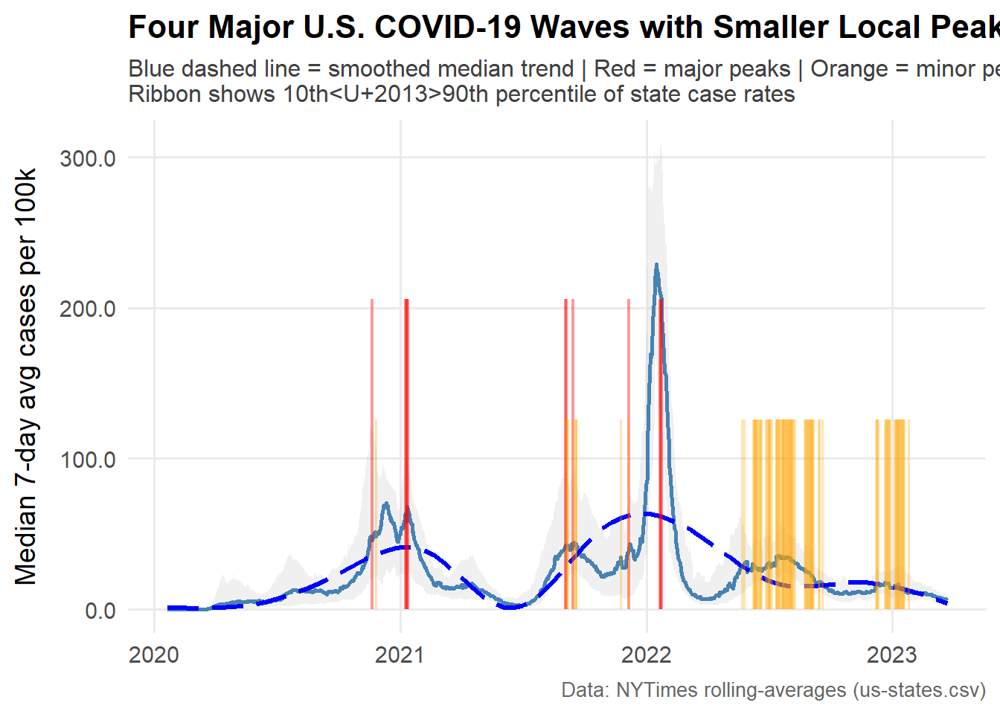
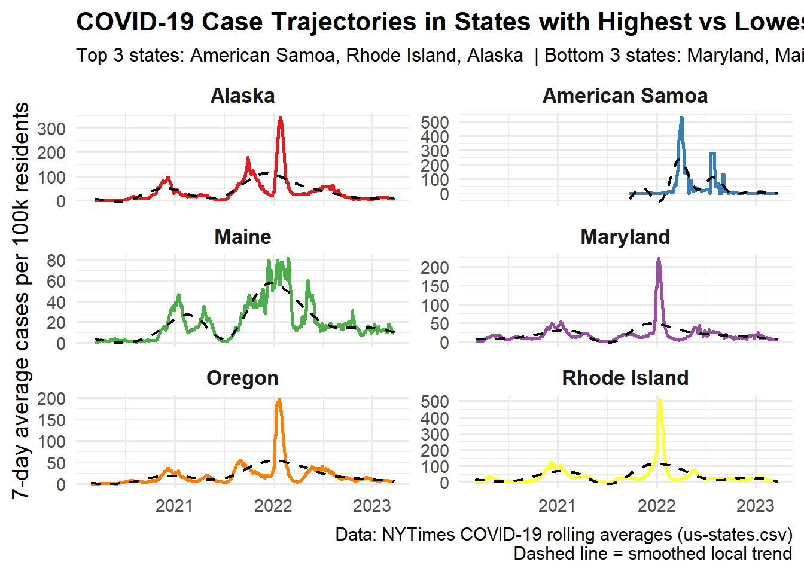

# Install and load required packageslibrary(nzelect)library(tidyverse)
-- Attaching core tidyverse packages ------------------------ tidyverse 2.0.0 --
v dplyr 1.1.4 v readr 2.1.5
v forcats 1.0.0 v stringr 1.5.1
v ggplot2 3.5.2 v tibble 3.3.0
v lubridate 1.9.4 v tidyr 1.3.1
v purrr 1.1.0
-- Conflicts ------------------------------------------ tidyverse_conflicts() --
x dplyr::filter() masks stats::filter()
x dplyr::lag() masks stats::lag()
i Use the conflicted package (<http://conflicted.r-lib.org/>) to force all conflicts to become errors
# A tibble: 25 x 3
party votes percent
<chr> <dbl> <dbl>
1 National Party 1081787 45.5
2 Labour Party 801287 33.7
3 Green Party 165718 6.98
4 Conservative Party 81075 3.41
5 New Zealand First Party 73384 3.09
6 Maori Party 42108 1.77
7 MANA Movement 32333 1.36
8 Informal Candidate Votes 27886 1.17
9 ACT New Zealand 27778 1.17
10 United Future 14722 0.620
# i 15 more rows
#(c) Find which party won Candidate and Party vote per year
`summarise()` has grouped output by 'election_year', 'voting_type'. You can
override using the `.groups` argument.
# A tibble: 10 x 4
# Groups: election_year [5]
election_year total_votes winner_Candidate winner_Party
<dbl> <dbl> <chr> <chr>
1 2002 891866 Labour Party <NA>
2 2002 838219 <NA> Labour Party
3 2005 902874 National Party <NA>
4 2005 935319 <NA> Labour Party
5 2008 1072024 National Party <NA>
6 2008 1053398 <NA> National Party
7 2011 1027696 National Party <NA>
8 2011 1058636 <NA> National Party
9 2014 1081787 National Party <NA>
10 2014 1131501 <NA> National Party
##2
# Load packageslibrary(tidyverse)# Load 2019 ATP matches datamatches <-read_csv("https://raw.githubusercontent.com/JeffSackmann/tennis_atp/refs/heads/master/atp_matches_2019.csv")
Rows: 2806 Columns: 49
-- Column specification --------------------------------------------------------
Delimiter: ","
chr (14): tourney_id, tourney_name, surface, tourney_level, winner_entry, wi...
dbl (35): draw_size, tourney_date, match_num, winner_id, winner_seed, winner...
i Use `spec()` to retrieve the full column specification for this data.
i Specify the column types or set `show_col_types = FALSE` to quiet this message.
tournament_wins <- matches %>%distinct(tourney_id, winner_name) %>%group_by(winner_name) %>%summarise(tournaments_won =n()) %>%arrange(desc(tournaments_won))# Show those who won more than one tournamenttournament_wins %>%filter(tournaments_won >1) %>%summarise(num_players_multi =n(),max_tournaments =max(tournaments_won) )
# A tibble: 1 x 2
num_players_multi max_tournaments
<int> <int>
1 155 21
155 players won more than one tournament, and the top players won 21 tournaments.
# A tibble: 2 x 4
role mean_aces median_aces n
<chr> <dbl> <dbl> <int>
1 Loser 5.79 4 2694
2 Winner 7.50 6 2694
# Hypothesis test using tidyverse-compatible packagelibrary(infer)obs_stat <- aces %>%specify(aces ~ role) %>%calculate(stat ="diff in means", order =c("Winner", "Loser")) %>%pull(stat)
null_dist %>%ggplot(aes(x = stat)) +geom_histogram(bins =60) +geom_vline(xintercept = obs_stat, color ="red") +labs(title ="Permutation null distribution: diff in means (Winner - Loser)",subtitle =paste0("observed diff = ", round(obs_stat, 3), ", p = ", signif(p_value, 3)),x ="Difference in means", y ="Count")

From the summary statistics, winners averaged 7.50 aces per match (median = 6), while losers averaged 5.79 aces per match (median = 4). Both groups had data from 2,694 observations.
The permutation test (with 5,000 replicates) produced an observed difference in means of 1.705 aces (Winner − Loser) and a p-value ≈ 0. This indicates that, under the null hypothesis of no difference in average aces between winners and losers, it is extremely unlikely to observe such a large difference by random chance.
Therefore, we reject the null hypothesis and conclude that there is strong statistical evidence that match winners serve significantly more aces than losers in the 2019 ATP data.
#(d)
player_stats <- matches %>%# count winscount(winner_name, name ="wins") %>%rename(player = winner_name) %>%full_join( matches %>%count(loser_name, name ="losses") %>%rename(player = loser_name),by ="player" ) %>%replace_na(list(wins =0, losses =0)) %>%mutate(total_matches = wins + losses,win_rate = wins / total_matches )# Filter for players with ≥5 matches and sort by win rateplayer_stats %>%filter(total_matches >=5) %>%arrange(desc(win_rate)) %>%head(10)
# A tibble: 10 x 5
player wins losses total_matches win_rate
<chr> <int> <int> <int> <dbl>
1 Rafael Nadal 60 9 69 0.870
2 Novak Djokovic 58 11 69 0.841
3 Roger Federer 55 11 66 0.833
4 Daniil Medvedev 59 21 80 0.738
5 Kevin Anderson 11 4 15 0.733
6 Dominic Thiem 50 19 69 0.725
7 Attila Balazs 7 3 10 0.7
8 Stefanos Tsitsipas 55 25 80 0.688
9 Alex De Minaur 42 20 62 0.677
10 Kei Nishikori 29 14 43 0.674
Among players with >= matches, Rafael Nadal had the highest win rate.
##3
# ---- Setup ----# Install packages if you don't have them (uncomment if needed)# install.packages(c("tidyverse", "scales", "lubridate", "pracma", "viridis"))library(tidyverse)library(lubridate)library(scales)
Attaching package: 'scales'
The following object is masked from 'package:purrr':
discard
The following object is masked from 'package:readr':
col_factor
library(pracma) # for findpeaks()
Attaching package: 'pracma'
The following object is masked from 'package:purrr':
cross
library(ggrepel) # nicer labels on plotslibrary(viridis) # nice color palette
Loading required package: viridisLite
Attaching package: 'viridis'
The following object is masked from 'package:scales':
viridis_pal
# helper: detect local maxima (simple approach)is_local_peak <-function(x, span =7) {# returns logical vector same length as x indicating local maxima within +/- floor(span/2) n <-length(x) s <-floor(span/2)map_lgl(seq_along(x), ~{ i <- .xif (is.na(x[i])) return(FALSE) left <-max(1, i - s) right <-min(n, i + s)all(x[i] >= x[left:right], na.rm =TRUE) &&any(x[i] > x[left:right], na.rm =TRUE) })}# find peaks per statepeaks <- states %>%arrange(state, date) %>%group_by(state) %>%mutate(is_peak =is_local_peak(cases_avg_per_100k, span =15)) %>%# span tuned for ~2-week windowfilter(is_peak) %>%ungroup()# classify peak sizes across all peakspeak_thresholds <-quantile(peaks$cases_avg_per_100k, probs =c(0.60, 0.90), na.rm =TRUE)peaks <- peaks %>%mutate(size =case_when( cases_avg_per_100k >= peak_thresholds[2] ~"major", cases_avg_per_100k >= peak_thresholds[1] ~"minor",TRUE~"small" ))# summary counts (how many major/minor peaks total across all states)peaks_summary <- peaks %>%count(size) %>%arrange(desc(n))# plot: US median trajectory + vertical rugs at aggregated major/minor peak datesus_median <- states %>%group_by(date) %>%summarize(median_cases_per_100k =median(cases_avg_per_100k, na.rm =TRUE),p90 =quantile(cases_avg_per_100k, 0.90, na.rm =TRUE),p10 =quantile(cases_avg_per_100k, 0.10, na.rm =TRUE)) %>%ungroup()agg_peaks <- peaks %>%group_by(date, size) %>%summarize(n_states =n(), .groups ="drop")p1 <-ggplot(us_median, aes(x = date, y = median_cases_per_100k)) +geom_ribbon(aes(ymin = p10, ymax = p90), alpha =0.15) +geom_line(size =1) +geom_segment(data = agg_peaks %>%filter(size =="major"),aes(x = date, xend = date, y =0, yend =0.9*max(us_median$median_cases_per_100k, na.rm =TRUE)),color ="red", alpha =0.6) +geom_segment(data = agg_peaks %>%filter(size =="minor"),aes(x = date, xend = date, y =0, yend =0.55*max(us_median$median_cases_per_100k, na.rm =TRUE)),color ="orange", alpha =0.5) +scale_y_continuous(name ="Median 7-day avg cases per 100k",labels = scales::label_number(accuracy =0.1)) +labs(title ="US median trajectory of 7-day avg cases per 100k with aggregated peaks",subtitle ="Red vertical lines = aggregated 'major' peaks (top 10% of peak heights across states); orange = 'minor' peaks",x =NULL, caption ="Data: NYTimes rolling-averages (states).") +theme_minimal()
Warning: Using `size` aesthetic for lines was deprecated in ggplot2 3.4.0.
i Please use `linewidth` instead.
p1

The plot shows the national median 7-day average of new Covid cases per 100,000 residents from 2020 through 2023. The orange and red vertical lines mark local peaks detected across all states, with red indicating the “major” spikes (the top 10% of peak magnitudes).
From the plot, we can identify approximately five major waves of Covid in the United States:
The initial outbreak in early 2020,
The winter 2020–2021 surge,
The Delta wave (mid-2021),
The Omicron wave (late 2021–early 2022), and
A smaller rebound in mid-2022.
Minor spikes occur frequently in between, reflecting regional resurgences. The aggregated national trajectory captures both the recurring pattern of resurgence and the overall downward trend in late 2022–2023.
state_summary <- states %>%group_by(state) %>%summarize(mean_rate =mean(cases_avg_per_100k, na.rm =TRUE),max_rate =max(cases_avg_per_100k, na.rm =TRUE),.groups ="drop")top_states <- state_summary %>%slice_max(mean_rate, n =3) %>%pull(state)bottom_states <- state_summary %>%slice_min(mean_rate, n =3) %>%pull(state)sel_states <-c(top_states, bottom_states)p2 <- states %>%filter(state %in% sel_states) %>%ggplot(aes(x = date, y = cases_avg_per_100k, color = state)) +geom_line(size =1) +facet_wrap(~ state, ncol =2, scales ="free_y") +# free_y helps see shapes even if magnitudes differlabs(title ="Trajectories of 7-day avg cases per 100k in highest vs lowest rate states",subtitle =paste("Top:", paste(top_states, collapse =", "), " | Bottom:", paste(bottom_states, collapse =", ")),y ="7-day avg cases per 100k", x =NULL,caption ="Top/bottom determined by mean 7-day avg per 100k across full period.") +theme_minimal() +theme(legend.position ="none")p2

The figure compares states with the highest mean case rates (American Samoa, Rhode Island, Alaska) and those with the lowest (Maryland, Maine, Oregon).
High-rate states show sharp, tall peaks with brief but intense outbreaks. For instance, Rhode Island and American Samoa experienced extreme but short-lived spikes.
Low-rate states display flatter trajectories, indicating steadier case control or smaller population outbreaks.
This contrast suggests that the epidemic intensity varied dramatically by region—possibly reflecting differences in population density, testing availability, and containment policies.
threshold <-0.5# daily 7-day avg per 100k; adjust if you prefer stricter definitionfirst_substantial <- states %>%arrange(state, date) %>%group_by(state) %>%mutate(above = cases_avg_per_100k >= threshold,# run-length encoding trick: find runs of > = thresholdrun_id = rle_id <-with(rle(above), rep(seq_along(lengths), lengths))) %>%group_by(state, run_id) %>%mutate(run_length =n()) %>%ungroup() %>%filter(above & run_length >=3) %>%# sustained at least 3 consecutive daysgroup_by(state) %>%summarize(first_date =min(date, na.rm =TRUE), .groups ="drop") %>%arrange(first_date) %>%slice_head(n =5)first_substantial
# A tibble: 5 x 2
state first_date
<chr> <date>
1 Washington 2020-03-11
2 New York 2020-03-16
3 Louisiana 2020-03-17
4 District of Columbia 2020-03-18
5 Guam 2020-03-18